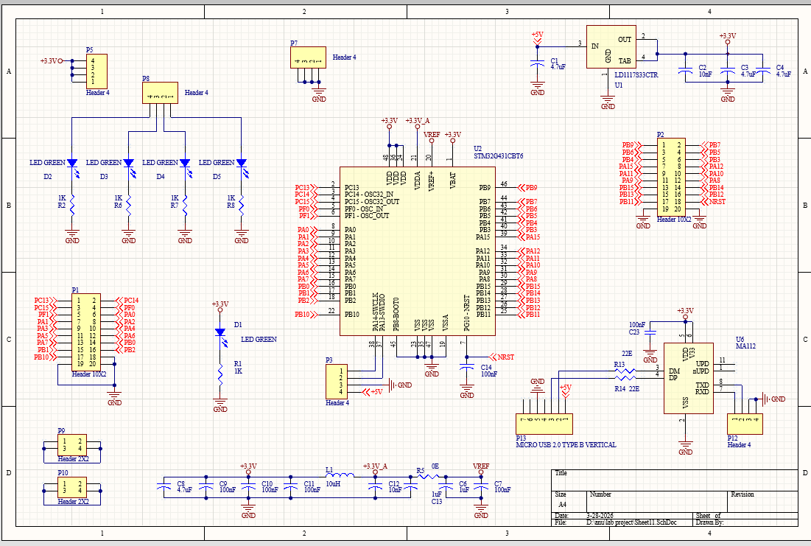
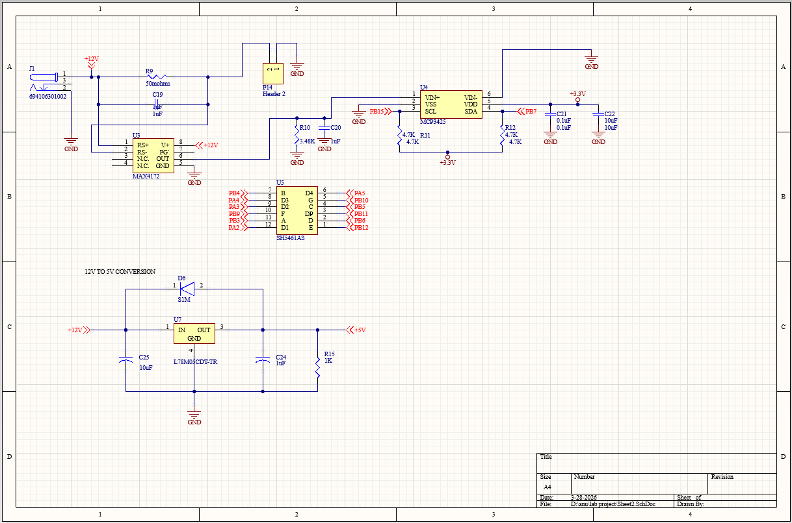
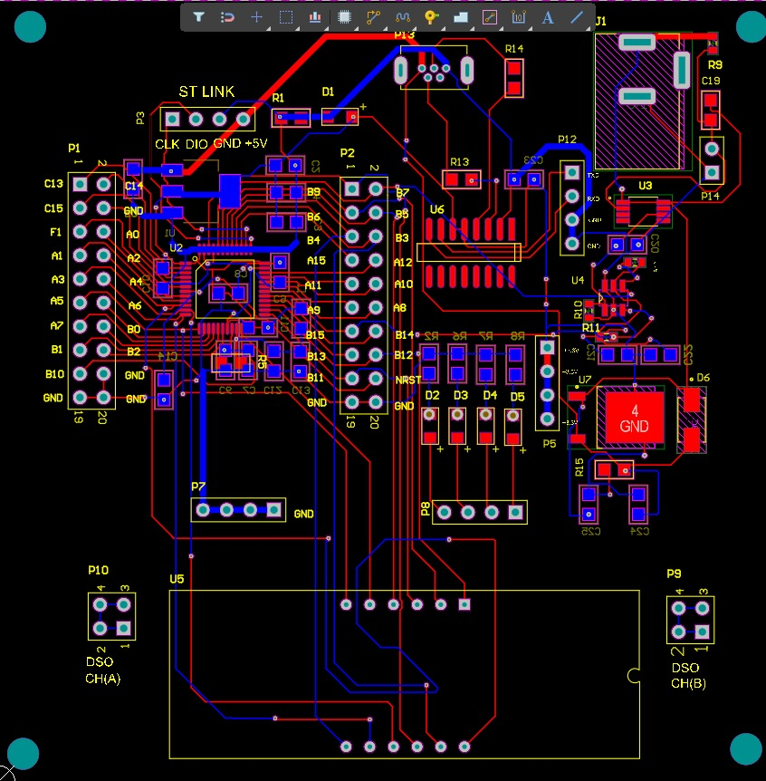
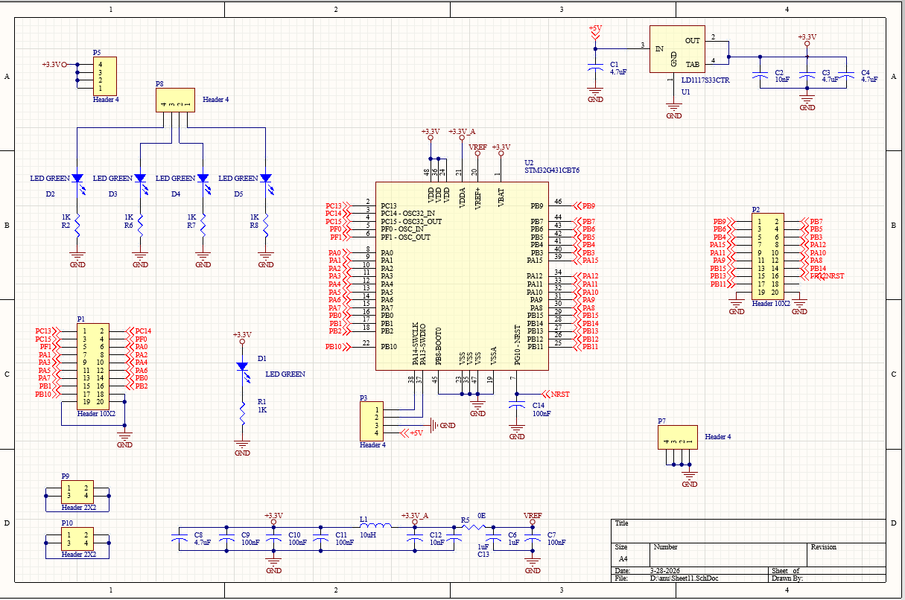
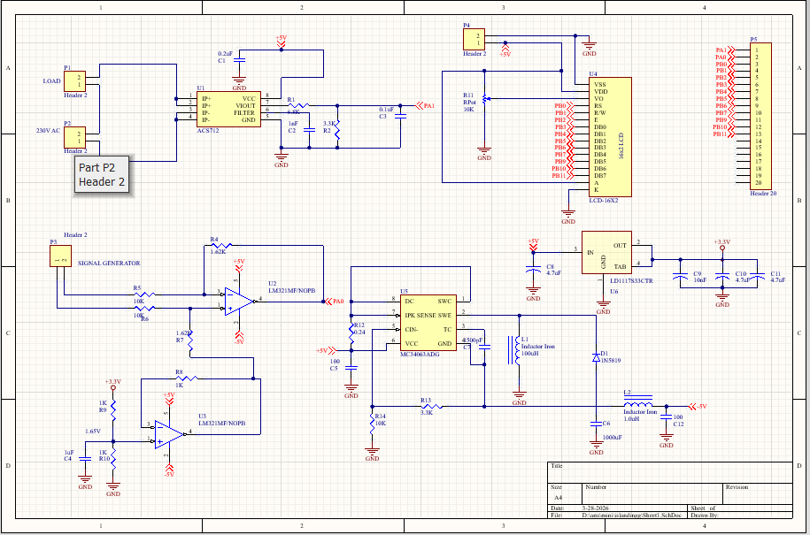
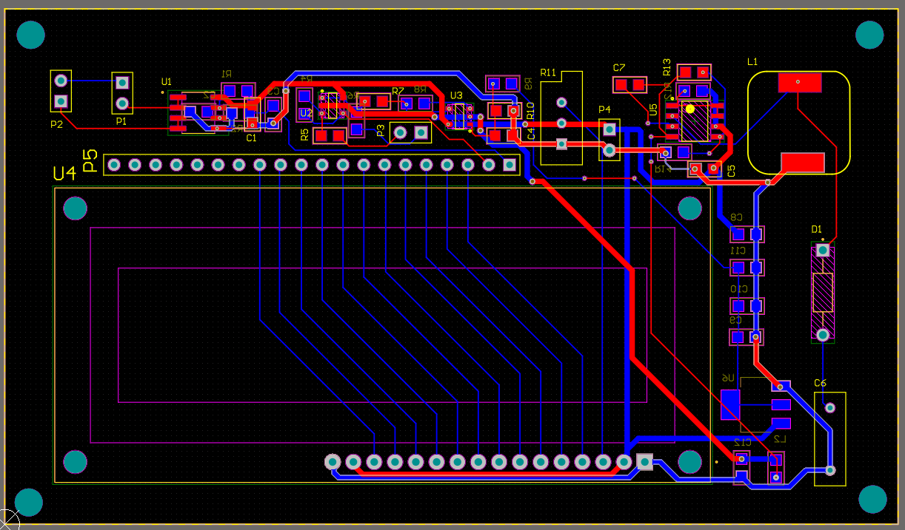
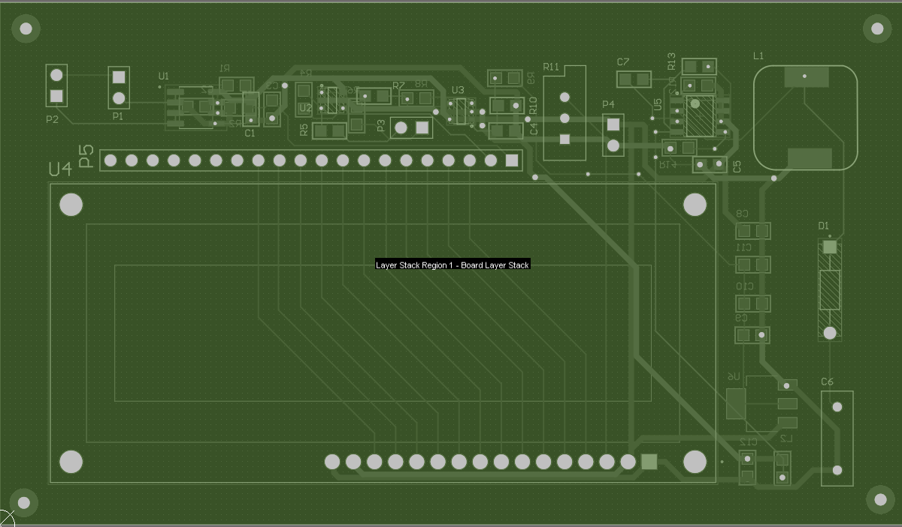

Projects
Winch Control System
Developing an STM32-based control system for submarine sonar winch at DRDO–NPOL using RTOS. Implemented VFD motor control, Auto/Manual modes, and safety interlocks. Integrated Ethernet communication using TCP/UDP protocols.
Digital Ammeter




Designed a PCB-based digital ammeter using MAX4172 and MCP3425 for precise current measurement. Implemented STM32 for real-time data processing and display control. Displayed output on a multiplexed 7-segment LED with stable readings.
Grid Monitoring System




Developed a real-time system to measure voltage, current, and frequency using STM32. Used signal conditioning circuits for accurate sensing of electrical parameters. Displayed live data on an LCD for continuous grid monitoring.
IoT Pet Feeder
Built an IoT-based automated pet feeding system using ESP module. Enabled remote scheduling and control through a mobile application. Implemented real-time monitoring and automation features.
Heart Pulse Monitoring System
Developed a heart pulse monitoring system for remote health tracking. Measured pulse rate using sensors and processed data through a microcontroller. Integrated mobile alerts for real-time monitoring during emergency conditions.